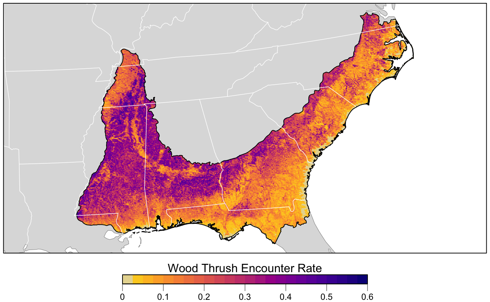

Chapter 4 Modeling Encounter Rate
4.1 Introduction
In this chapter we’ll estimate the encounter rate of Wood Thrush on eBird checklists in June in BCR 27. We define encounter rate as measuring the probability of an eBirder encountering a species on a standard eBird checklist.
The ecological metric we’re ultimately interested in is the probability that a species occurs at a site (i.e. the occupancy probability). This is usually not possible to estimate with semi-structured citizen science data like those from eBird because we typically can’t estimate absolute detectability. However, by accounting for much of the variation in detectability by including effort covariates in our model, the remaining unaccounted detectability will be more consistent across sites (Guillera-Arroita et al. 2015). Therefore, the encounter rate metric will be proportional to occupancy, albeit lower by some consistent amount. For some easily detectable species the difference between occurrence and actual occupancy rate will be small, and these encounter rates will approximate the actual occupancy rates of the species. For harder to detect species, the encounter rate may be substantially lower than the occupancy rate.
Random forests are a general purpose machine learning method applicable to a wide range of classification and regression problems, including the task at hand: classifying detection and non-detection of a species on eBird checklists. In addition to having good predictive performance, random forests are reasonably easy to use and have several efficient implementations in R. Prior to fitting a random forest model, we’ll demonstrate how to address issues of class imbalance and spatial bias using spatial subsampling on a regular grid. After fitting the model, we’ll assess its performance using a subset of data put aside for testing, and calibrate the model to ensure predictions are accurate. Finally, we’ll predict encounter rates throughout the study area and produce maps of these predictions.
4.2 Data preparation
Let’s get started by loading the necessary packages and data. If you worked through the previous chapters, you should have all the data required for this chapter. However, you may want to download the data package, and unzip it to your project directory, to ensure you’re working with exactly the same data as was used in the creation of this book.
library(sf)
library(raster)
library(dggridR)
library(lubridate)
library(ranger)
library(scam)
library(PresenceAbsence)
library(verification)
library(ebirdst)
library(fields)
library(gridExtra)
library(tidyverse)
# resolve namespace conflicts
select <- dplyr::select
map <- purrr::map
projection <- raster::projection
# set random number seed to insure fully repeatable results
set.seed(1)
# setup output directory for saved results
if (!dir.exists("output")) {
dir.create("output")
}
# ebird data
ebird <- read_csv("data/ebd_woothr_june_bcr27_zf.csv") %>%
# year required to join to habitat data
mutate(year = year(observation_date))
# modis habitat covariates
habitat <- read_csv("data/pland-elev_location-year.csv") %>%
mutate(year = as.integer(year))
# combine ebird and habitat data
ebird_habitat <- inner_join(ebird, habitat, by = c("locality_id", "year"))
# prediction surface
pred_surface <- read_csv("data/pland-elev_prediction-surface.csv")
# latest year of landcover data
max_lc_year <- max(pred_surface$year)
r <- raster("data/prediction-surface.tif")
# load gis data for making maps
map_proj <- st_crs(102003)
ne_land <- read_sf("data/gis-data.gpkg", "ne_land") %>%
st_transform(crs = map_proj) %>%
st_geometry()
bcr <- read_sf("data/gis-data.gpkg", "bcr") %>%
st_transform(crs = map_proj) %>%
st_geometry()
ne_country_lines <- read_sf("data/gis-data.gpkg", "ne_country_lines") %>%
st_transform(crs = map_proj) %>%
st_geometry()
ne_state_lines <- read_sf("data/gis-data.gpkg", "ne_state_lines") %>%
st_transform(crs = map_proj) %>%
st_geometry()4.3 Spatiotemporal subsampling
As discussed in the introduction, three of the challenges faced when using eBird data, are spatial bias, temporal bias, and class imbalance. Spatial and temporal bias refers to the tendency of eBird checklists to be distributed non-randomly in space and time, while class imbalance refers to fact that there will be many more non-detections than detections for most species. All three can impact our ability to make reliable inferences from these data. Fortunately, all three can largely be addressed through subsampling the eBird data prior to modeling. In particular, we define an equal area hexagonal grid across the study region, and then subsample detections and non-detections separately to ensure that we don’t lose too many detections. In our example, we will be sampling one detection and one non-detection checklist from each grid cell for each week.
Hexagonal grids may seem exotic relative to square grids, which may be more familiar; however, they have a variety of benefits (Sahr 2011) including significantly less spatial distortion. With hexagonal grids we can be sure all the cells are of equal area, which is particularly important if we have a large region for modeling. The R package dggridR makes working with hexagonal grids simple and efficient. We’ll construct a grid with 5 km spacing between the centres of adjacent hexagons, then sample randomly from these hexagonal cells.
Before working with the real data, it’s instructive to look at a simple toy example, to see how this subsampling process works. We’ll generate a few hundred random points, overlay a hexagonal grid, then sample one point from each cell.
# bounding box to generate points from
bb <- st_bbox(c(xmin = -0.1, xmax = 0.1, ymin = -0.1, ymax = 0.1),
crs = 4326) %>%
st_as_sfc() %>%
st_sf()
# random points
pts <- st_sample(bb, 500) %>%
st_sf(as.data.frame(st_coordinates(.)), geometry = .) %>%
rename(lat = Y, lon = X)
# contruct a hexagonal grid with ~ 5 km between cells
dggs <- dgconstruct(spacing = 5)
# for each point, get the grid cell
pts$cell <- dgGEO_to_SEQNUM(dggs, pts$lon, pts$lat)$seqnum
# sample one checklist per grid cell
pts_ss <- pts %>%
group_by(cell) %>%
sample_n(size = 1) %>%
ungroup()
# generate polygons for the grid cells
hexagons <- dgcellstogrid(dggs, unique(pts$cell), frame = FALSE) %>%
st_as_sf()
ggplot() +
geom_sf(data = hexagons) +
geom_sf(data = pts, size = 0.5) +
geom_sf(data = pts_ss, col = "red") +
theme_bw()
Now let’s apply exactly the same approach to subsampling the real eBird checklists; however, now we subsample temporally in addition to spatially, and sample detections and non-detections separately.
# generate hexagonal grid with ~ 5 km betweeen cells
dggs <- dgconstruct(spacing = 5)
# get hexagonal cell id and week number for each checklist
checklist_cell <- ebird_habitat %>%
mutate(cell = dgGEO_to_SEQNUM(dggs, longitude, latitude)$seqnum,
year = year(observation_date),
week = week(observation_date))
# sample one checklist per grid cell per week
# sample detection/non-detection independently
ebird_ss <- checklist_cell %>%
group_by(species_observed, year, week, cell) %>%
sample_n(size = 1) %>%
ungroup()How did this impact the prevalence of detections compared to non-detections?
# original data
nrow(ebird_habitat)
#> [1] 48450
count(ebird_habitat, species_observed) %>%
mutate(percent = n / sum(n))
#> # A tibble: 2 x 3
#> species_observed n percent
#> <lgl> <int> <dbl>
#> 1 FALSE 46355 0.957
#> 2 TRUE 2095 0.0432
# after sampling
nrow(ebird_ss)
#> [1] 20093
count(ebird_ss, species_observed) %>%
mutate(percent = n / sum(n))
#> # A tibble: 2 x 3
#> species_observed n percent
#> <lgl> <int> <dbl>
#> 1 FALSE 18617 0.927
#> 2 TRUE 1476 0.0735So, the subsampling decreased the overall number of checklists by a factor of about four, but increased the prevalence of detections from 4% to 7%. This increase in detections will help the random forest model distinguish where birds are being observed; however, this does affect the prevalence rate of the detections in the data. As a result, the estimated probability of occurrence based on these subsampled data will be larger than the true occurrence rate. When examining the outputs from the models it will be important to recall that we altered the prevalence rate at this stage. Now let’s look at how the subsampling affects the spatial distribution of the observations.
# convert checklists to spatial features
all_pts <- ebird_habitat %>%
st_as_sf(coords = c("longitude","latitude"), crs = 4326) %>%
st_transform(crs = map_proj) %>%
select(species_observed)
ss_pts <- ebird_ss %>%
st_as_sf(coords = c("longitude","latitude"), crs = 4326) %>%
st_transform(crs = map_proj) %>%
select(species_observed)
both_pts <- list(before_ss = all_pts, after_ss = ss_pts)
# map
p <- par(mfrow = c(2, 1))
for (i in seq_along(both_pts)) {
par(mar = c(0.25, 0.25, 0.25, 0.25))
# set up plot area
plot(st_geometry(both_pts[[i]]), col = NA)
# contextual gis data
plot(ne_land, col = "#dddddd", border = "#888888", lwd = 0.5, add = TRUE)
plot(bcr, col = "#cccccc", border = NA, add = TRUE)
plot(ne_state_lines, col = "#ffffff", lwd = 0.75, add = TRUE)
plot(ne_country_lines, col = "#ffffff", lwd = 1.5, add = TRUE)
# ebird observations
# not observed
plot(st_geometry(both_pts[[i]]),
pch = 19, cex = 0.1, col = alpha("#555555", 0.25),
add = TRUE)
# observed
plot(filter(both_pts[[i]], species_observed) %>% st_geometry(),
pch = 19, cex = 0.3, col = alpha("#4daf4a", 0.5),
add = TRUE)
# legend
legend("bottomright", bty = "n",
col = c("#555555", "#4daf4a"),
legend = c("Non-detection", "Detection"),
pch = 19)
box()
par(new = TRUE, mar = c(0, 0, 3, 0))
if (names(both_pts)[i] == "before_ss") {
title("Wood Thrush eBird Observations\nBefore subsampling")
} else {
title("After subsampling")
}
}
par(p)
For Wood Thrush, subsampling the detections and non-detections independently is sufficient for dealing with class imbalance. You can assess the impact of class imbalance by looking at the prevalence rates and examining whether the models are good at predicting to validation data. For species that are extremely rare, it may be worthwhile considering keeping all detections or even oversampling detections (Robinson, Ruiz‐Gutierrez, and Fink 2018). In doing this, be aware that some of your species detections will not be independent, which could lead to overfitting of the data. Overall, when thinking about the number of detections and the prevalence rate, it’s important to consider both the ecology and detectability of the focal species, and the behavior of observers towards this species.
4.4 Random forests
Now we’ll use a random forest model to relate detection/non-detection of Wood Thrush to the habitat covariates (MODIS land cover and elevation), while also accounting for variation in detectability by including a suite of effort covariates. Before we fit the random forest model, we randomly split the data into 80% of checklists for training and 20% for testing. We’ll hold this 20% aside when we fit the model, then use it as an independent data set to test the predictive performance of the model.
ebird_split <- ebird_ss %>%
# select only the columns to be used in the model
select(species_observed,
year, day_of_year,
time_observations_started, duration_minutes,
effort_distance_km, number_observers,
starts_with("pland_"),
starts_with("elevation_")) %>%
drop_na()
# split 80/20
ebird_split <- ebird_split %>%
split(if_else(runif(nrow(.)) <= 0.8, "train", "test"))
map_int(ebird_split, nrow)
#> test train
#> 3938 16135Although we were able to partially address the issue of class imbalance via subsampling, detections still only make up 7% of observations, and for rare species this number will be even lower. Most classification algorithms aim to minimize the overall error rate, which results in poor predictive performance for rare classes (Chen, Liaw, and Breiman 2004). To address this issue, we’ll use a balanced random forest approach, a modification of the traditional random forest algorithm designed to handle imbalanced data. In this approach, each of the trees that makes up the random forest is generated using a random sample of the data chosen such that there is an equal number of the detections (the rare class) and non-detections (the common class). To use this approach, we’ll need to calculate the proportion of detections in the dataset.
There are several packages for fitting random forests in R; however, we’ll use ranger, which is a blazingly fast implementation with all the features we need. To fit a balanced random forest, we use the sample.fraction parameter to instruct ranger to grow each tree based on a random sample of the data that has an equal number of detections and non-detections. Specifying this is somewhat obtuse, because we need to tell ranger the proportion of the total data set to sample for non-detections and detections, and when this proportion is the same as the proportion of the rarer class–the detections–then then ranger will sample from all of the rarer class but from an equally sized subset of the more common non-detections. We use replace = TRUE to ensure that it’s a bootstrap sample. We’ll also ask ranger to predict probabilities, rather than simply returning the most probable class, with probability = TRUE.
# ranger requires a factor response to do classification
ebird_split$train$species_observed <- factor(ebird_split$train$species_observed)
# grow random forest
rf <- ranger(formula = species_observed ~ .,
data = ebird_split$train,
importance = "impurity",
probability = TRUE,
replace = TRUE,
sample.fraction = c(detection_freq, detection_freq))4.4.1 Calibration
For various reasons, the predicted probabilities from models do not always align with the observed frequencies of detections. For example, we would hope that if we look at all sites with a estimated probability of encounter of 0.2, that 20% of these would record the species. However, these probabilities are not always so well aligned. This will clearly be the case in our example, because we have deliberately inflated the prevalence of detection records in the data through the spatiotemporal subsampling process. We can produce a calibration of the predictions, which can be a useful diagnostic tool to understand the model predictions, and in some cases can be used to realign the predictions with observations. For information on calibration in species distribution models see Vaughan and Ormerod (2005) and for more fundamental references on calibration see Platt (1999), Murphy (1973), and Niculescu-Mizil and Caruana (2005).
To view the calibration of our model results, we predict encounter rate for each checklist in the training set, then fit a binomial Generalized Additive Model (GAM) with the real observed encounter rate as the response and the predicted encounter rate as the predictor variable. Whereas GLMs fit a linear relationship between a response and predictors, GAMs allow non-linear relationships. Although GAMs provide a degree of flexibility, however in some situations they may overfit and provide unrealistic and unhelpful calibrations. We have a strong a priori expectation that higher real values will also be associated with higher estimated rates. In order to maintain the ranking of predictions, it is important that we respect this ordering and to do this we’ll use a GAM that is constrained to only increase. To fit the GAM, we’ll use the R package scam, so the shape can be constrained to be monotonically increasing. Note that predictions from ranger are in the form of a matrix of probabilities for each class, and we want the probability of detections, which is the second column of this matrix.
# make predictions on training data
occ_pred <- rf$predictions[, 2]
# convert the observered response back to a numeric value from factor
occ_obs <- ebird_split$train$species_observed %>%
as.logical() %>%
as.integer()
rf_pred_train <- tibble(obs = occ_obs, pred = occ_pred) %>%
drop_na()
# fit calibration model
calibration_model <- scam(obs ~ s(pred, k = 5, bs = "mpi"),
gamma = 1.4,
data = rf_pred_train)
# calculate the average observed encounter rates for different
# categories of estimated encounter rates
average_encounter <- rf_pred_train %>%
mutate(pred_cat = cut(rf_pred_train$pred, breaks = seq(0, 1, by=0.02))) %>%
group_by(pred_cat) %>%
summarise(pred = mean(pred), obs = mean(obs), checklist_count = n()) %>%
ungroup()
# plot
cal_pred <- tibble(pred = seq(0, 1, length.out = 100))
cal_pred <- predict(calibration_model, cal_pred, type = "response") %>%
bind_cols(cal_pred, calibrated = .)
ggplot(cal_pred) +
aes(x = pred, y = calibrated) +
geom_line() +
geom_point(data = average_encounter,
aes(x = pred, y = obs, size = sqrt(checklist_count)),
show.legend = FALSE, shape = 1) +
labs(x = "Estimated encounter rate",
y = "Observed encounter rate",
title = "Calibration model")
Using this as a diagnostic tool, we can clearly see that the estimated encounter rates are mostly much larger than the observed encounter rates. So we see that the model is not well calibrated. However, we do see from the points that the relative ranking of predictions is largely good. Sites with estimated higher encounter rate do mostly have higher encounter rates.
From this we have learnt that the model is good at distinguishing sites with high rates from those with low rates. For those readers familiar with using AUC scores to assess the quality of species distribution models, the graph is telling us that the model should have a high AUC value. However, the model is not so good at estimating encounter rates accurately.
If accurate encounter rates are required, and the calibration model is strong (close fit of points to the line in the figure above), then the calibration model can be used to calibrate the estimates from the random forest model, so they are adjusted to match the observed encounter rates more closely. The calibrated random forest model is the combination of the original random forest model followed by the calibration model.
If you’re using this model to calibrate your estimates, notice that the calibration curve can produce probabilities greater than 1 and less than 0, so when applying the calibration we also need to restrict the predictions to be between 0 and 1. It’s possible to run a logistic regression for the calibration to remove these predictions less than 0 or greater than 1; however, we’ve found the Gaussian constrained GAM to be more stable than the logistic constrained GAM.
4.4.2 Assessment
To assess the quality of both the uncalibrated and the calibrated model, we’ll validate the model’s ability to predict the observed patterns of occupancy using independent validation data (i.e. the 20% test data set). We’ll use a range of predictive performance metrics to compare the predictions to the actual observations: mean squared error (MSE), sensitivity, specificity, AUC, and Kappa. Several of these metrics require the predicted probabilities to be classified into detection/non-detection. We’ll do this using a threshold, chosen to maximize the Kappa statistic.
# predict on test data using calibrated model
p_fitted <- predict(rf, data = ebird_split$test, type = "response")
# extract probability of detection
p_fitted <- p_fitted$predictions[, 2]
# calibrate
p_calibrated <- predict(calibration_model,
newdata = tibble(pred = p_fitted),
type = "response")
rf_pred_test <- data.frame(id = seq_along(p_calibrated),
# actual detection/non-detection
obs = ebird_split$test$species_observed,
# uncalibrated prediction
fit = p_fitted,
# calibrated prediction
cal = p_calibrated) %>%
# constrain probabilities to 0-1
mutate(cal = pmin(pmax(cal, 0), 1)) %>%
drop_na()
# mean squared error (mse)
mse_fit <- mean((rf_pred_test$obs - rf_pred_test$fit)^2, na.rm = TRUE)
mse_cal <- mean((rf_pred_test$obs - rf_pred_test$cal)^2, na.rm = TRUE)
# pick threshold to maximize kappa
opt_thresh <- optimal.thresholds(rf_pred_test, opt.methods = "MaxKappa")
# calculate accuracy metrics: auc, kappa, sensitivity, specificity,
metrics_fit <- rf_pred_test %>%
select(id, obs, fit) %>%
presence.absence.accuracy(threshold = opt_thresh$fit,
na.rm = TRUE,
st.dev = FALSE)
metrics_cal <- rf_pred_test %>%
select(id, obs, cal) %>%
presence.absence.accuracy(threshold = opt_thresh$cal,
na.rm = TRUE,
st.dev = FALSE)
rf_assessment <- tibble(
model = c("RF", "Calibrated RF"),
mse = c(mse_fit, mse_cal),
sensitivity = c(metrics_fit$sensitivity, metrics_cal$sensitivity),
specificity = c(metrics_fit$specificity, metrics_cal$specificity),
auc = c(metrics_fit$AUC, metrics_cal$AUC),
kappa = c(metrics_fit$Kappa, metrics_cal$Kappa)
)
knitr::kable(rf_assessment, digits = 3)| model | mse | sensitivity | specificity | auc | kappa |
|---|---|---|---|---|---|
| RF | 0.139 | 0.358 | 0.946 | 0.831 | 0.306 |
| Calibrated RF | 0.064 | 0.554 | 0.882 | 0.831 | 0.309 |
Each of these metrics can inform us about different aspects of the model fit. The objectives of your study will determine which of these metrics is most important. For example, if you want to ensure that the model definitely includes all areas of species presence, you would seek to have high sensitivity. Alternatively, if you want to ensure that places the model predicts for species occurrence are true (for example, when identifying areas for conservation action), you would seek to maximise specificity. Note that in our example, calibration had little effect on any of the metrics of accurate classification (i.e. binary presence/absence), but the mean squared error in estimation of probability of occurrence was halved by calibration.
4.5 Habitat associations
From the random forest model, we can glean two important sources of information about the association between Wood Thrush detection and features of their local environment. First, predictor importance is a measure of the predictive power of each covariate, and is calculated as a byproduct of fitting a random forest model. Second, partial dependence plots estimate the marginal effect of one predictor holding all other predictors constant.
4.5.1 Predictor importance
During the process of fitting a random forest model, some variables are removed at each node of the trees that make up the random forest. Predictor importance is based on the mean decrease in accuracy of the model when a given covariate is not used. It’s technically an average Gini index, but essentially larger values indicate that a predictor is more important to the model.
pi <- enframe(rf$variable.importance, "predictor", "importance")
# plot
ggplot(pi) +
aes(x = fct_reorder(predictor, importance), y = importance) +
geom_col() +
geom_hline(yintercept = 0, size = 2, colour = "#555555") +
scale_y_continuous(expand = c(0, 0)) +
coord_flip() +
labs(x = NULL,
y = "Predictor Importance (Gini Index)") +
theme_minimal() +
theme(panel.grid = element_blank(),
panel.grid.major.x = element_line(colour = "#cccccc", size = 0.5))
The most important predictors of detection/non-detection are generally effort variables. Indeed, that’s the case here: start time and checklist duration both have high predictor importance. This tells us that the time of day and length of time the observer was out, both have a large effect on whether Wood Thrush was recorded on the checklist.
Both elevation covariates have high importance, and the top descriptors of vegetation type are the proportions of mixed forest, woody savanna, and deciduous broadleaf forest. Note that high importance doesn’t tell us the direction of the relationship with detection, for that we’ll have to look at partial dependence plots.
Let’s grab the top 9 most important predictors, which we’ll need in the next section.
4.5.2 Partial dependence
Partial dependence plots show the marginal effect of a given predictor on encounter rate averaged across the other predictors. These plots are generated by predicting encounter rate at a regular sequence of points across the full range of values of a given predictor. At each predictor value, predictions of encounter rate are made for a random subsample of the training dataset with the focal predictor fixed, but all other predictors left as is. The encounter rate predictions are then averaged across all the checklists in the training dataset giving an estimate of the average encounter rate at a specific value of the focal predictor. This is a cumbersome process, but we provide a function below that does all the hard work for you! This function takes the following arguments:
predictor: the name of the predictor to calculate partial dependence formodel: the encounter rate modeldata: the original data used to train the modelx_res: the resolution of the grid over which to calculate the partial dependence, i.e. the number of points between the minimum and maximum values of the predictor to evaluate partial dependence atn: number of points to subsample from the training data
# function to calculate partial dependence for a single predictor
calculate_pd <- function(predictor, model, data,
x_res = 25, n = 1000) {
# create prediction grid
rng <- range(data[[predictor]], na.rm = TRUE)
x_grid <- seq(rng[1], rng[2], length.out = x_res)
grid <- data.frame(covariate = predictor, x = x_grid,
stringsAsFactors = FALSE)
names(grid) <- c("covariate", predictor)
# subsample training data
n <- min(n, nrow(data))
s <- sample(seq.int(nrow(data)), size = n, replace = FALSE)
data <- data[s, ]
# drop focal predictor from data
data <- data[names(data) != predictor]
grid <- merge(grid, data, all = TRUE)
# predict
p <- predict(model, data = grid)
# summarize
pd <- grid[, c("covariate", predictor)]
names(pd) <- c("covariate", "x")
pd$pred <- p$predictions[, 2]
pd <- dplyr::group_by(pd, covariate, x) %>%
dplyr::summarise(pred = mean(pred, na.rm = TRUE)) %>%
dplyr::ungroup()
return(pd)
}Now we’ll use this function to calculate partial dependence for the top 9 predictors.
# calculate partial dependence for each predictor
# map is used to iteratively apply calculate_pd to each predictor
pd <- top_pred %>%
mutate(pd = map(predictor, calculate_pd, model = rf,
data = ebird_split$train),
pd = map(pd, ~ .[, c(2, 3)]),
pd = map(pd, set_names, nm = c("value", "encounter_rate"))) %>%
unnest(cols = pd)
# calibrate predictions
pd$encounter_rate <- predict(calibration_model,
newdata = tibble(pred = pd$encounter_rate),
type = "response") %>%
as.numeric()
# plot
ggplot(pd) +
aes(x = value, y = encounter_rate) +
geom_line() +
geom_point() +
scale_y_continuous(labels = scales::percent) +
facet_wrap(~ as_factor(predictor), nrow = 3, scales = "free") +
labs(x = NULL, y = "Encounter Rate") +
theme_minimal() +
theme_minimal() +
theme(panel.grid = element_blank(),
axis.line = element_line(color = "grey60"),
axis.ticks = element_line(color = "grey60"))
There are a range of interesting responses here. As seen in Section 2.5, the encounter rate for Wood Thrush peaks early in the morning when they’re most likely to be singing, then quickly drops off in the middle of the day, before slightly increasing in the evening. Some other predictors show a more smoothly increasing relationship with encounter rate, for example, as the landscape contains more deciduous forest, the encounter rate increases.
The random forest model has a number of interactions, which are not displayed in these partial dependence plots. When interpreting these, bear in mind that there are likely some more complex interaction effects beneath these individual plots.
4.6 Prediction
Now for the fun part: let’s use the calibrated random forest model to make a map of Wood Thrush encounter rate in BCR 27! In Section 3.4, we created a prediction surface consisting of the PLAND habitat covariates summarized on a regular grid of points across BCR 27. In this section, we’ll make predictions of encounter rate at these points. However, first we need to bring effort variables into this prediction surface. We’ll make predictions for a standard eBird checklist: a 1 km, 1 hour traveling count at the peak time of day for detecting this species. Finally, we’ll make these predictions for June 15, 2018, the middle of our June focal window for the latest year for which MODIS landcover data exist.
To find the time of day with the highest detection probability, we can look for the peak of the partial dependence plot. The one caveat to this approach is that it’s important we focus on times of day for which there are enough data to make predictions. In particular, there’s an increasing trend in detectability with earlier start times, and few checklists late at night, which can cause the model to incorrectly extrapolate that trend to show highest detectability at night. Let’s start by looking at a plot to see if this is happening here.
# find peak time of day from partial dependence
pd_time <- calculate_pd("time_observations_started",
model = rf,
data = ebird_split$train,
# make estimates at 30 minute intervals
# using a subset of the training dataset
x_res = 2 * 24, n = 1000) %>%
transmute(time_observations_started = x, encounter_rate = pred)
# histogram
g_hist <- ggplot(ebird_split$train) +
aes(x = time_observations_started) +
geom_histogram(binwidth = 1, center = 0.5, color = "grey30",
fill = "grey50") +
scale_x_continuous(breaks = seq(0, 24, by = 3)) +
scale_y_continuous(labels = scales::comma) +
labs(x = "Hours since midnight",
y = "# checklists",
title = "Distribution of observation start times")
# gam
g_pd <- ggplot(pd_time) +
aes(x = time_observations_started, y = encounter_rate) +
geom_line() +
scale_x_continuous(breaks = seq(0, 24, by = 3)) +
labs(x = "Hours since midnight",
y = "Probability of reporting",
title = "Observation start time partial dependence")
# combine
grid.arrange(g_hist, g_pd)
The peak probability of reporting is very close to the time of day during which the abundance of reports starts to increase, but from these graphs it is not entirely clear that the early morning peak in reports is well substantiated by abundant data. Let’s instead look for the peak time within hours of the day that contain at least 1% of the training data.
# hours with at least 1% of checklists
search_hours <- ebird_split$train %>%
mutate(hour = floor(time_observations_started)) %>%
count(hour) %>%
mutate(pct = n / sum(n)) %>%
filter(pct >= 0.01)
# constrained peak time
t_peak <- pd_time %>%
filter(floor(time_observations_started) %in% search_hours$hour) %>%
top_n(1, wt = desc(time_observations_started)) %>%
pull(time_observations_started)
t_peak
#> [1] 5.07Based on this analysis, the best time for detecting Wood Thrush is at 5:04 AM. Now we use this time to make predictions. This is equivalent to many eBirders all conducting a checklist within different grid cells on June 15 at 5:04 AM. We also add the other effort variables to the prediction dataset.
# add effort covariates to prediction
pred_surface_eff <- pred_surface %>%
mutate(observation_date = ymd(str_glue("{max_lc_year}-06-15")),
year = year(observation_date),
day_of_year = yday(observation_date),
time_observations_started = t_peak,
duration_minutes = 60,
effort_distance_km = 1,
number_observers = 1)
# predict
pred_rf <- predict(rf, data = pred_surface_eff, type = "response")
pred_rf <- pred_rf$predictions[, 2]
# apply calibration models
pred_rf_cal <- predict(calibration_model,
data.frame(pred = pred_rf),
type = "response")
# add to prediction surface
pred_er <- bind_cols(pred_surface_eff, encounter_rate = pred_rf_cal) %>%
select(latitude, longitude, encounter_rate) %>%
mutate(encounter_rate = pmin(pmax(encounter_rate, 0), 1))Next, we’ll convert this data frame to spatial features using sf, then rasterize the points using the prediction surface raster template.
r_pred <- pred_er %>%
# convert to spatial features
st_as_sf(coords = c("longitude", "latitude"), crs = 4326) %>%
st_transform(crs = projection(r)) %>%
# rasterize
rasterize(r)
r_pred <- r_pred[[-1]]
# save the raster
tif_dir <- "output"
if (!dir.exists(tif_dir)) {
dir.create(tif_dir)
}
writeRaster(r_pred, file.path(tif_dir, "rf-model_encounter-rate_woothr.tif"),
overwrite = TRUE)Finally, we can map these predictions!
# project predictions
r_pred_proj <- projectRaster(r_pred, crs = map_proj$proj4string, method = "ngb")
par(mar = c(3.5, 0.25, 0.25, 0.25))
# set up plot area
plot(bcr, col = NA, border = NA)
plot(ne_land, col = "#dddddd", border = "#888888", lwd = 0.5, add = TRUE)
# encounter rate
r_max <- ceiling(10 * cellStats(r_pred_proj, max)) / 10
brks <- seq(0, r_max, by = 0.025)
lbl_brks <- seq(0, r_max, by = 0.1)
# ebird status and trends color palette
pal <- abundance_palette(length(brks) - 1)
plot(r_pred_proj,
col = pal, breaks = brks,
maxpixels = ncell(r_pred_proj),
legend = FALSE, add = TRUE)
# borders
plot(bcr, border = "#000000", col = NA, lwd = 1, add = TRUE)
plot(ne_state_lines, col = "#ffffff", lwd = 0.75, add = TRUE)
plot(ne_country_lines, col = "#ffffff", lwd = 1.5, add = TRUE)
box()
# legend
par(new = TRUE, mar = c(0, 0, 0, 0))
title <- "Wood Thrush Encounter Rate"
image.plot(zlim = range(brks), legend.only = TRUE,
col = pal, breaks = brks,
smallplot = c(0.25, 0.75, 0.06, 0.09),
horizontal = TRUE,
axis.args = list(at = lbl_brks, labels = lbl_brks,
fg = "black", col.axis = "black",
cex.axis = 0.75, lwd.ticks = 0.5,
padj = -1.5),
legend.args = list(text = title,
side = 3, col = "black",
cex = 1, line = 0))
References
Chen, Chao, Andy Liaw, and Leo Breiman. 2004. “Using Random Forest to Learn Imbalanced Data.” University of California, Berkeley 110 (1-12): 24.
Guillera-Arroita, Gurutzeta, José J. Lahoz-Monfort, Jane Elith, Ascelin Gordon, Heini Kujala, Pia E. Lentini, Michael A. McCarthy, Reid Tingley, and Brendan A. Wintle. 2015. “Is My Species Distribution Model Fit for Purpose? Matching Data and Models to Applications.” Global Ecology and Biogeography 24 (3): 276–92.
Murphy, Allan H. 1973. “A New Vector Partition of the Probability Score.” Journal of Applied Meteorology 12 (4): 595–600. https://doi.org/10.1175/1520-0450(1973)012<0595:ANVPOT>2.0.CO;2.
Niculescu-Mizil, Alexandru, and Rich Caruana. 2005. “Predicting Good Probabilities with Supervised Learning.” In Proceedings of the 22nd International Conference on Machine Learning, 625–32. ACM.
Platt, John. 1999. “Probabilistic Outputs for Support Vector Machines and Comparisons to Regularized Likelihood Methods.” Advances in Large Margin Classifiers 10 (3): 61–74.
Robinson, Orin J., Viviana Ruiz‐Gutierrez, and Daniel Fink. 2018. “Correcting for Bias in Distribution Modelling for Rare Species Using Citizen Science Data.” Diversity and Distributions 24 (4): 460–72. https://doi.org/10.1111/ddi.12698.
Sahr, Kevin. 2011. “Hexagonal Discrete Global Grid Systems for Geospatial Computing.” Archiwum Fotogrametrii, Kartografii I Teledetekcji 22: 363–76.
Vaughan, I. P., and S. J. Ormerod. 2005. “The Continuing Challenges of Testing Species Distribution Models.” Journal of Applied Ecology 42 (4): 720–30. https://doi.org/10.1111/j.1365-2664.2005.01052.x.